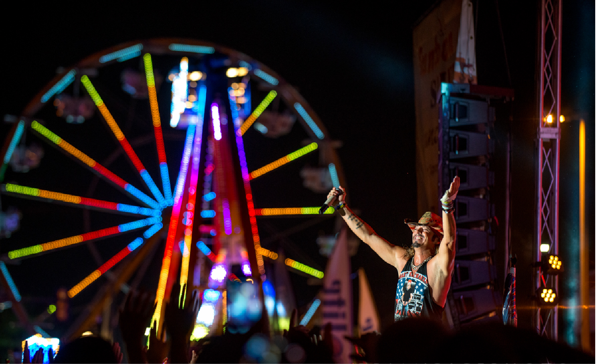

ABOUT

“Tribute to America” will be the theme for Sundown Salute this year in
Junction City. The celebration is
scheduled July 3-7.
Michelle Stimatze, Geary County Convention and Visitor’s Bureau Director, said the Sundown Salute parade
will
follow that theme, and the celebration will also recognize tribute bands in Kansas. A number of tribute
bands
will perform during the celebration ranging from Almost Kiss and KCDC on Wednesday July 3rd to Change of
Heart
on Guns for Roses on July 4th.
Stimatze confirmed that on Friday night, July 5th, “Hairball” will be the headliner for the five-day
celebration. She said they’re from Wichita. “We actually have been invited to some of their concerts just to
see
what they can do. They bring a lot to the table with different dress, different lighting. It’s really a
great
show to come to.”
Many of the tribute bands will perform rock or motown music.
Other activities during Sundown Salute will include on July 4th the traditional parade, the Freedom Run,
Veterans Ceremony and fireworks. The Ottaway Amusements Carnival will operate throughout the celebration and
will bring a new ride called, “Flying Dumbo.” There will be vendors set up in Heritage Park, a petting zoo,
a
car show, and local performances on the bandstand. The local talent show, “JC Has Talent will be back and
organizers are working on the possibility of having either motorcycle or bicycle jumpers perform.